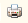

.
.Данный отчет показывает ту номенклатуру, которая полагается сотрудникам по принятым в организации нормам, помесячно для выбранного расчетного периода. Таким образом, в данном отчете будет отображена ежемесячная потребность сотрудников в СИЗ. Отчет полезен для предоставления информации и уведомления сотрудников о необходимости получения СИЗ.
Чтобы сформировать отчет, зайдите в раздел «Обеспечение сотрудников», «Панель отчетов по обеспечению сотрудников», и выберите «График обеспечения СИЗ».
В панели настроек задайте период и выберите нужную организацию. Дальнейший отбор данных может быть произведен по выбранному подразделению или виду выдачи СИЗ (коллективная или персональная). После того, как будут заданы все нужные параметры отбора, нажмите на кнопку «Сформировать».
Примечание: график обеспечения будет доступен для использования только после установки алгоритма формирования потребности.
Будет построен график обеспечения СИЗ.
В отчете будут отражены следующие данные:
1. Подразделение, в котором работает сотрудник.
2. ФИО сотрудника, которому полагаются СИЗ.
3. Антропометрические данные сотрудников.
Примечание: для того, чтобы нужное значение появилось в отчете, его нужно указать в справочнике номенклатур; чтобы выводилось значение роста, необходимо проставить флажок «Использовать рост».
Также существует возможность группового изменения всей номенклатуры: необходимо зайти в справочник номенклатуры нормы, затем выделить необходимые наименования и нажать кнопку «Изменить выделенные».
4. Установленная номенклатура нормы.
5. Количество номенклатуры, которое необходимо выдать данному сотруднику, чтобы закрыть потребность, за определенный месяц.
Чтобы распечатать сформированный отчет, нажмите кнопку  на командной панели отчета. Сохранить отчет можно с помощью кнопки .